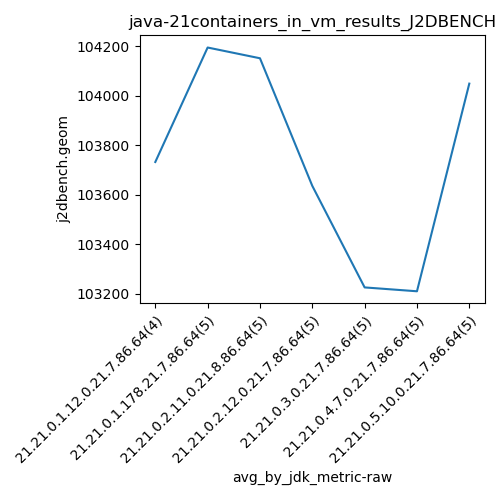
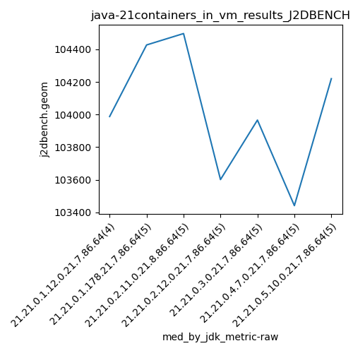

java-21 J2DBENCH
Context at bottom
/home/jvanek/git/benchmarks-in-nested-virtualisation-toolchain/final_results/containers_in_vm_results/containers_in_vm_results_JMH
java-21
J2DBENCH
/home/jvanek/git/benchmarks-in-nested-virtualisation-toolchain/final_results/containers_in_vm_results/containers_in_vm_results_J2DBENCH
java-21
J2DBENCH
containers_in_vm_results_J2DBENCH
final score
Expected number of java-21 JDKs: 7
1st avgmed_alljdks_metric:
/home/jvanek/git/benchmarks-in-nested-virtualisation-toolchain/final_results/result_processing.py /home/jvanek/git/benchmarks-in-nested-virtualisation-toolchain/final_results/containers_in_vm_results/containers_in_vm_results_J2DBENCH j2dbench.geom False
values: [102787, 104511, 103643, 103988, 104254, 104515, 104758, 103019, 104427, 104743, 103888, 104890, 102738, 104497, 103601, 104305, 103143, 103442, 103688, 103966, 104539, 104118, 100244, 103262, 103441, 103807, 103143, 103490, 102170, 103245, 104465, 104510, 103804, 104220]

Expected number of iterations: 5
final number of values: 34 out of 35
Pass rate: 97.1%
values: (100244, 104890, 103742.9705882353, 103888)

** accuracy from all jdks and runs
more is better
MIN: 100244
MAX: 104890
AVG: 103742.9705882353
MED: 103888
Relative differences 1:
MIN-MAX: 4.0 %
MIN-AVG: 3.0 %
MIN-MED: 4.0 %
MAX-MIN: -5.0 %
MAX-AVG: -1.0 %
MAX-MED: -1.0 %
AVG-MED: 0.0 %
stored to java-21.properties. sort | uniq that!
2nd avgmed_by_jdk_metric:
values: [103732.25, 104194.6, 104151.2, 103635.8, 103225.8, 103210.2, 104048.8]

values: [103988, 104427, 104497, 103601, 103966, 103441, 104220]

values: (103210.2, 104194.6, 103742.66428571429, 103732.25)
values: (103441, 104497, 104020.0, 103988)

** accuracy from all jdks where runs were avged
more is better
MIN: 103210.2
MAX: 104194.6
AVG: 103742.66428571429
MED: 103732.25
Relative differences 1:
MIN-MAX: 1.0 %
MIN-AVG: 1.0 %
MIN-MED: 1.0 %
MAX-MIN: -1.0 %
MAX-AVG: -0.0 %
MAX-MED: -0.0 %
AVG-MED: -0.0 %
stored to java-21.properties. sort | uniq that!
** accuracy from all jdks where runs were medianed
more is better
MIN: 103441
MAX: 104497
AVG: 104020.0
MED: 103988
Relative differences 1:
MIN-MAX: 1.0 %
MIN-AVG: 1.0 %
MIN-MED: 1.0 %
MAX-MIN: -1.0 %
MAX-AVG: -0.0 %
MAX-MED: -0.0 %
AVG-MED: -0.0 %
stored to java-21.properties. sort | uniq that!
/home/jvanek/git/benchmarks-in-nested-virtualisation-toolchain/final_results/containers_in_vm_results/containers_in_vm_results_RADARGUNs3
java-21
J2DBENCH
/home/jvanek/git/benchmarks-in-nested-virtualisation-toolchain/final_results/containers_in_vm_results/containers_in_vm_results_SPECJBB
java-21
J2DBENCH
/home/jvanek/git/benchmarks-in-nested-virtualisation-toolchain/final_results/containers_in_vm_results/containers_in_vm_results_RADARGUNs1
java-21
J2DBENCH
/home/jvanek/git/benchmarks-in-nested-virtualisation-toolchain/final_results/containers_in_vm_results/containers_in_vm_results_DACAPO
java-21
J2DBENCH
pass rates:
containers_in_vm_results_J2DBENCH=97.1%
Context:
- containers_in_vm_results
- J2DBENCH